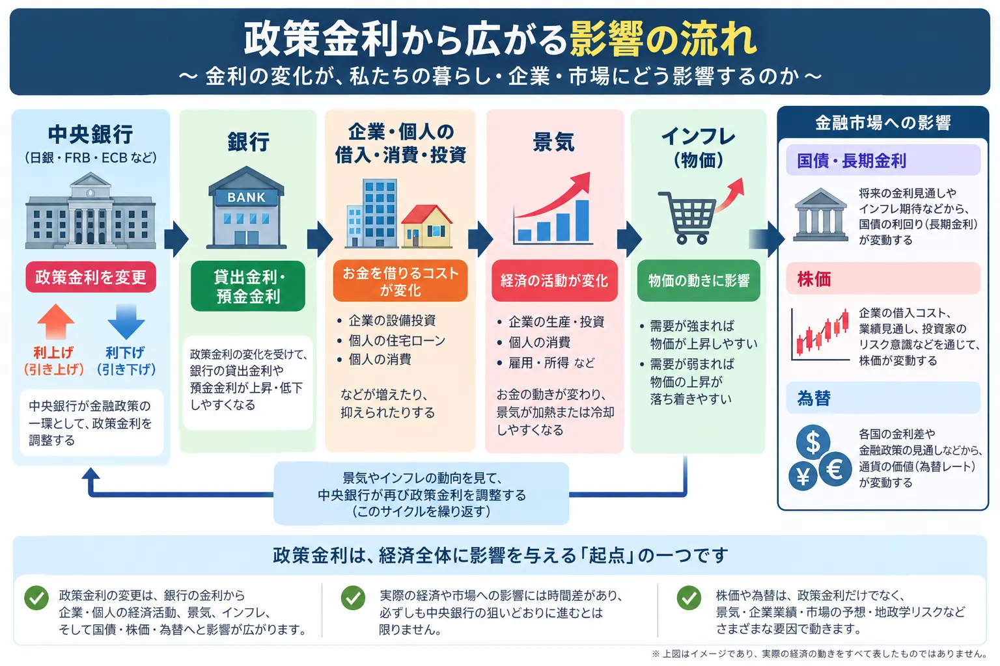

話題・トレンド
政策金利とは？なぜ中央銀行が金利を上げると株価や為替が動くの？初心者向けに解説
「FRBが利上げ」「日銀が政策金利を据え置き」「利下げ観測が後退」といったニュースは、株価や為替、国債市場を大きく動かすことがあります。政策金利は中央銀行が金融政策を行う際の重要な基準であり、銀行の貸出金利、企業や個人の借入、景気、物価、長期金利などへ影響が広がります。この記事では、政策金利を起点に相場へ影響が波及する仕組みを初心者向けに整理します。
Overview
政策金利が少し動くだけで、なぜ世界の相場が動く？
政策金利は、中央銀行が景気や物価の安定を目指して金融環境を調整するための重要な手段です。政策金利が変わると、短期の市場金利を通じて銀行の資金調達コストや貸出金利へ影響が及び、企業の設備投資、個人の住宅ローンや消費、景気、物価へと時間をかけて波及します。その結果、企業利益の見通しや国債利回り、通貨の相対的な魅力も変化し、株価や為替が動く要因になります。

- 政策金利は、さまざまな市場金利へ影響を与える起点の一つです。
- 中央銀行がすべての貸出金利や国債利回りを直接決めているわけではありません。
- 政策変更の効果が実体経済へ広がるまでには時間差があります。
- 市場は「今の金利」だけでなく「これから金利がどうなりそうか」を先回りして動きます。
Definition
政策金利とは？
政策金利とは、中央銀行が金融政策を行う際の基準となる金利です。中央銀行は政策金利や金融市場への資金供給などを通じて、短期の市場金利へ働きかけ、その影響を銀行の貸出金利、企業や個人の借入、景気、物価へ広げようとします。
重要ポイント
「すべての金利を直接決める数字」ではない
住宅ローン、企業向け融資、国債利回りなどは、それぞれ市場環境や信用リスク、期間、需給などによって決まります。政策金利は、それらへ影響を与える重要な起点の一つと考えると分かりやすくなります。
金融政策の狙い
景気と物価のバランスを整える
物価上昇が強すぎるときは金融環境を引き締め、景気が急速に弱くなったときは金融環境を緩めるなど、中央銀行は経済全体の状態を見ながら政策を調整します。
政策金利から実体経済へ影響が広がる基本イメージ
政策金利の変更 → 市場金利 → 銀行の貸出金利 → 企業・個人の借入 → 投資・消費 → 景気・物価
実際には為替、国際情勢、金融機関の貸出姿勢、企業や家計の心理なども関係するため、この流れが常に同じ強さ・同じ速度で起きるわけではありません。
Central Banks
誰が政策金利を決めるの？
政策金利や金融政策は各国・地域の中央銀行が決めます。初心者が金融ニュースを読むうえでは、まず次の3つを覚えておけば十分です。
| 国・地域 | 中央銀行 | 主な会合・決定の場 | ニュースでよく見る表現 |
|---|---|---|---|
| 日本 | 日本銀行 | 金融政策決定会合 | 政策金利、追加利上げ、据え置き |
| 米国 | FRB（連邦準備制度） | FOMC | 利上げ、利下げ、据え置き、金利見通し |
| ユーロ圏 | ECB（欧州中央銀行） | ECB理事会 | 主要政策金利、利上げ、利下げ |
※ スマートフォンでは横にスクロールできます。
各中央銀行の制度や政策手段は完全に同じではありません。ニュースを見るときは「どの中央銀行が、どの会合で、どの政策を変更したのか」を確認すると整理しやすくなります。
Rate Hike
なぜ中央銀行は政策金利を上げるの？
利上げの代表的な目的は、インフレを抑え、過熱した需要や景気を落ち着かせることです。借入コストが高くなることで、企業や個人がお金を借りて使う勢いを緩やかにしようとします。
- 政策金利が上がる
短期の市場金利や金融機関の資金調達コストへ上昇圧力がかかります。
- 市場金利や借入金利が上がりやすくなる
企業融資、住宅ローンなどの金利が上昇しやすくなります。
- 設備投資や住宅購入、消費が抑えられやすくなる
借入コストが高くなるため、企業や家計が支出を慎重にする場合があります。
- 需要が弱まりやすくなる
商品やサービスへの需要が落ち着けば、価格上昇の勢いが緩む可能性があります。
- インフレ圧力の低下を目指す
物価上昇率を安定させることが利上げの目的になる場合があります。
注意：政策金利を上げても、物価や景気がすぐに変化するとは限りません。金融政策の効果には時間差があり、エネルギー価格、為替、供給制約など別の要因が強いと、想定どおりの結果にならないこともあります。
Rate Cut
なぜ中央銀行は政策金利を下げるの？
利下げは、景気を下支えし、企業や個人がお金を借りやすい金融環境をつくる目的で行われる場合があります。借入コストが低下すれば、設備投資や住宅購入、消費を後押しする効果が期待されます。
景気を下支え
企業活動や個人消費が弱っているとき、資金調達をしやすくして経済活動を支える狙いがあります。
借入コストを抑える
企業や個人の支払う金利が低下すれば、投資や消費に回せる余力が増える可能性があります。
需要を刺激
設備投資や住宅購入などが増えれば、需要を通じて景気を支える効果が期待されます。
「利下げ＝必ず株高」ではない
利下げは株式市場にとって追い風になる場合がありますが、利下げの理由が深刻な景気後退や雇用悪化であれば、企業業績への不安が強まり株価が下落することもあります。大切なのは、利下げそのものより「なぜ利下げが必要になったのか」を確認することです。
Stocks
政策金利と株価の関係
利上げは株価へ下押し圧力をかけることがありますが、反応は企業の業種や財務状況、市場予想、景気の強さなどによって変わります。
借入コスト
企業の利払い負担が増える場合がある
借入金の多い企業では、金利上昇が支払利息の増加につながり、利益を圧迫する場合があります。
需要
消費や設備投資が鈍化することがある
住宅、自動車、設備投資など金利の影響を受けやすい需要が弱くなると、関連企業の業績見通しにも影響します。
企業価値
将来利益の現在価値が下がりやすくなる
株価は将来利益への期待も含んでいます。金利が高くなると、遠い将来の利益を現在の価値へ置き換えたときの評価が低くなりやすく、成長期待の大きい企業ほど金利変化に敏感になる場合があります。
他資産との比較
債券の利回り上昇で資金の選択肢が変わる
国債など比較的値動きの小さい資産の利回りが上がると、投資家が株式に求める期待収益率も変わり、株価評価へ影響する場合があります。
利上げ＝株安、利下げ＝株高と単純化しないことが重要です。 景気が非常に強い中での利上げであれば企業業績の強さが株価を支える場合もあります。逆に、深刻な景気悪化への対応として利下げしても、業績不安が勝てば株価が下落することがあります。
Bonds & Yields
政策金利と国債・長期金利の関係
政策金利と長期金利は同じものではありません。政策金利は中央銀行の金融政策の基準となる短期金利であり、国債利回りなどの長期金利は市場参加者の予想や需給を反映して形成されます。
| 項目 | 政策金利 | 長期金利 |
|---|---|---|
| 中心となる期間 | 短期 | 長期 |
| 決まり方 | 中央銀行の金融政策で決定・誘導 | 国債市場などで形成 |
| 主な影響要因 | 物価、景気、雇用、金融政策判断 | 将来の政策金利予想、インフレ期待、景気見通し、国債需給など |
| 先回り | 会合で正式決定 | 将来の政策予想だけで先に動くことがある |
※ スマートフォンでは横にスクロールできます。
市場が「これから中央銀行は何度も利上げする」と予想すれば、実際の政策金利変更より前に国債が売られ、利回りが上昇することがあります。反対に、利下げが近いと予想されれば、長期金利が先に低下することもあります。
Foreign Exchange
政策金利と為替の関係
金利が高い国の通貨は、その通貨建て資産の利回りが相対的に高くなることで買われやすくなる場合があります。ただし、為替は金利差だけで決まるわけではありません。
米国の金利が高い場合のイメージ
米国の金利が高い → ドル建て資産の利回りが相対的に高くなる → ドルを保有する魅力が高まる → ドル買いの要因になることがある
- 各国の金利差
- 将来の金融政策予想
- 景気
- インフレ
- リスク回避
- 貿易
- 資金フロー
「利上げ＝必ず通貨高」ではありません。 利上げがすでに市場へ織り込まれていた場合や、景気悪化への懸念が強い場合、他国も同時に利上げしている場合などは、想定と違う動きになることがあります。
Market Expectations
なぜ政策金利を変更する前から相場が動くの？
金融市場は、現在の政策金利だけでなく将来の金融政策を先回りして動くからです。投資家は経済指標や中央銀行関係者の発言をもとに、次回以降の政策変更を予想します。
例1
「次のFOMCで利下げされそう」
利下げ期待が高まると、実際の会合より前に米国債利回りが低下したり、株価やドルが動いたりすることがあります。
例2
「日銀が追加利上げを行うかもしれない」
追加利上げの可能性が意識されるだけでも、日本の金利、銀行株、円相場などが先に反応することがあります。
相場を大きく動かすのは「市場予想との差」
市場予想：0.25％利下げ ／ 実際：据え置き
この場合、政策金利が上がったわけではありません。それでも、市場が期待していた利下げが実現しなかったことで、債券・株式・為替が大きく動くことがあります。金融ニュースでは「何が決まったか」と同じくらい、「市場は事前に何を予想していたか」が重要です。
中央銀行関係者の発言を読むときは、「タカ派・ハト派とは？」も合わせて確認すると、利上げ・利下げに対する姿勢を理解しやすくなります。
Economic Indicators
政策金利を見るときに重要な経済指標
中央銀行は、物価や景気、雇用など幅広いデータを確認して金融政策を判断します。単独の指標だけで政策を決めるわけではありませんが、初心者は次の指標を押さえておくとニュースを理解しやすくなります。
物価が高い
利上げ・高金利維持が意識されやすい
インフレが目標を上回る状態が続けば、中央銀行が金融引き締めを続けるとの見方が強まりやすくなります。
景気・雇用が急速に悪化
利下げが意識されやすい
需要や雇用が急速に弱まれば、景気を支えるために金融緩和が必要になるとの予想が強まることがあります。
- CPI
- PCEデフレーター
- PPI
- 雇用統計
- GDP
- 賃金
- 景気指標
News Checklist
初心者が金融ニュースを見るときのポイント
「利上げした」「利下げした」という見出しだけで判断せず、背景と市場予想まで確認するとニュースを立体的に理解できます。
1. 政策金利が上がった・下がっただけを見ない
変更幅だけでなく、その理由と今後の方針を確認します。
2. 市場が事前に何を予想していたか確認する
相場は事前予想を織り込んでいることがあり、予想との差が値動きの大きさを左右します。
3. 利上げ・利下げの「理由」を見る
強い景気の中での利上げなのか、物価急騰への対応なのか、景気後退への対応としての利下げなのかで意味は変わります。
4. 今回の政策より今後の見通しを見る
据え置きでも、次回以降の利上げ・利下げを示唆する発言があれば市場が大きく動くことがあります。
5. 中央銀行総裁の発言にも注目する
政策決定後の会見や発言で、インフレ・景気・雇用への評価が示されるため、次の政策を考える材料になります。
6. 株価・為替・債券は政策金利だけで決まらない
企業業績、地政学、需給、資金フロー、商品価格など複数の要因が同時に影響します。
「利上げだから売る」「利下げだから買う」と単純化しないことが大切です。 金融政策は相場を動かす重要要因の一つですが、それだけで投資判断を決めるのは避けましょう。
From Policy Rate to Markets
政策金利の次に理解したい「実質金利」
政策金利の変更は市場金利やインフレ期待を通じて、実質金利にも関係します。金（ゴールド）や成長株の値動きを理解するには、名目金利だけでなく物価上昇を差し引いた実質金利も重要です。
Related Articles
政策金利と一緒に読みたい関連記事
CPI・PCE・雇用統計から中央銀行の政策判断、政策金利、実質金利、債券市場、株価・為替・金へとつなげて読むと理解が深まります。
FAQ
政策金利に関するよくある質問
政策金利とは？
中央銀行が金融政策を行う際の基準となる金利です。市場金利や銀行の貸出金利などへ影響を与え、景気や物価を調整する起点の一つとして機能します。政策金利は誰が決めるの？
日本では日本銀行、米国ではFRBのFOMC、ユーロ圏ではECBが金融政策を決めます。具体的な制度や政策手段は国・地域ごとに異なります。利上げすると株価は必ず下がる？
必ず下がるわけではありません。借入コストや企業価値への影響は下押し要因になり得ますが、企業業績、景気、市場予想、利上げ理由などでも反応は変わります。利下げすると株価は必ず上がる？
必ず上がるわけではありません。景気後退への懸念が強まった結果として利下げする場合、企業業績への不安から株価が下落することもあります。政策金利と長期金利は同じ？
同じではありません。政策金利は金融政策の基準となる短期金利で、長期金利は将来の政策金利予想、インフレ期待、景気見通し、国債需給などを反映して市場で形成されます。なぜ政策変更前から相場が動くの？
市場参加者が将来の政策変更を先回りして価格へ織り込むためです。実際の政策変更より、市場予想との差が大きく相場を動かすこともあります。
Summary
まとめ｜政策金利は金融ニュースを理解する中心テーマ
- 政策金利は中央銀行が金融政策を行う際の基準となる金利です。
- 政策金利はすべての金利を直接決めるものではなく、市場金利や貸出金利へ影響を与える起点の一つです。
- 利上げはインフレや景気の過熱を抑える目的、利下げは景気を下支えする目的で行われることがあります。
- 政策金利の変更は、借入、消費、設備投資、景気、物価を通じて株価や為替へ影響が広がります。
- 政策金利と長期金利は同じではなく、長期金利は将来の政策予想やインフレ期待、国債需給などで市場形成されます。
- 「利上げ＝株安」「利下げ＝株高」「利上げ＝通貨高」と単純化せず、市場予想との差と政策変更の理由を見ることが重要です。
Next Step
物価指標と実質金利までつなげて理解する
政策金利のニュースを理解できたら、次はCPI・PCEデフレーター・雇用統計が中央銀行の判断へどうつながり、その後に実質金利・債券・株価・為替へ波及するのかを確認すると理解が深まります。
ご利用にあたっての注意事項
本記事は一般的な情報提供と金融教育を目的としており、特定の金融商品・銘柄・通貨・投資手法の推奨や、投資の勧誘を目的としたものではありません。金融政策や市場環境は変化するため、実際の政策判断や金利水準を確認する際は、日本銀行、FRB、ECBなど各中央銀行の最新の公式情報をご確認ください。株式・債券・FX・投資信託などの金融商品には元本割れや為替変動等のリスクがあります。取引を行う際は、最新の公式情報や契約締結前交付書面等を確認し、ご自身の判断と責任で行ってください。